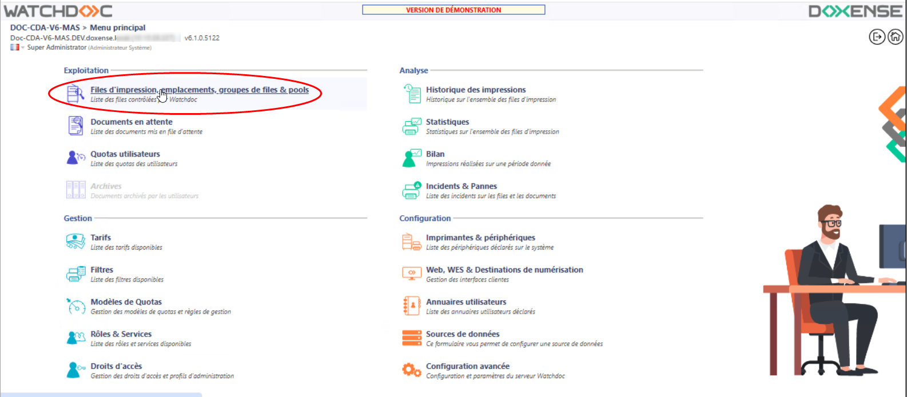
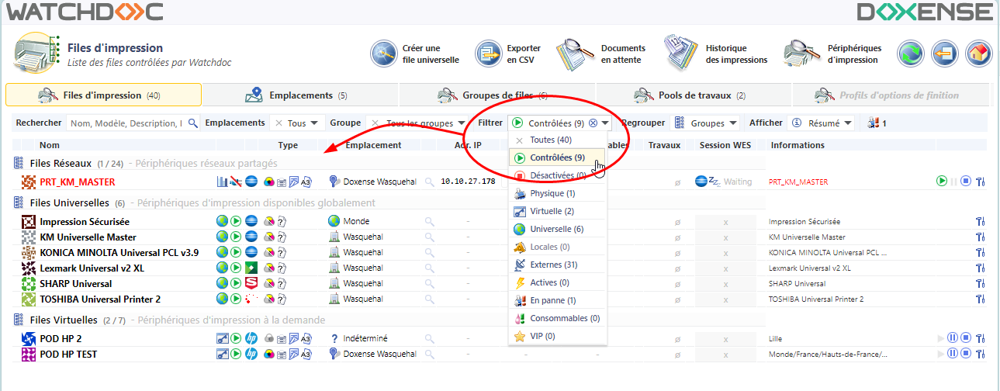
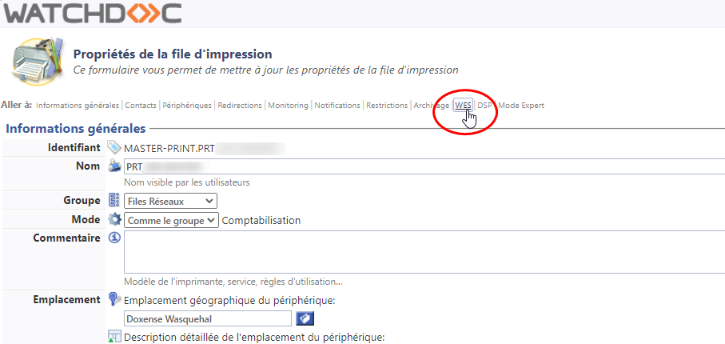
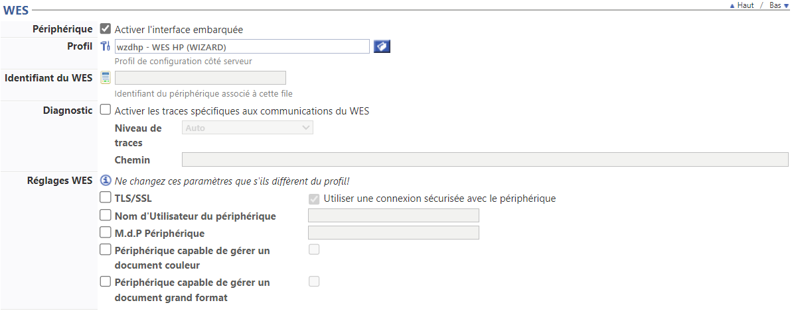

Hewlett Packard - Configurer le WES sur la file
Accéder à l'interface
-
Depuis le Menu principal de l'interface d'administration Watchdoc, section Exploitation, cliquez sur Files d'impression, groupes de files & pools :

{kind=link}
è Vous accédez à l'interface présentant les files d'impressions. 
Dans cette file, activez le filtre Contrôlées, puis sélectionnez la file à configurer :
{kind=link}
2. Pour cette file, cliquez sur le boutonModifier les propriétés de la file situé en bout de ligne :
è Vous accédez à l'interface Propriétés de la file d'impression dans laquelle s'affichent plusieurs sections. Les propriétés du WES sont gérées dans la section WES : 
{kind=link}
Configurer le WES sur la file
Dans la section WES de la file :
-
Activer l'interface embarquée : cochez la case pour appliquer un WES sur le périphérique.
-
Profil : dans la liste, sélectionnez le WES à appliquer sur la file. La liste est constituée des profils créés préalablement dans votre instance Watchdoc. Si le profil souhaité n'y figure pas, il convient de le configurer (cf. section précédente).
-
Identifiant du WES : ce champ est automatiquement complété de la valeur “$AUTOSERIAL$”. Si vous conservez cette valeur, le serveur détermine automatiquement le numéro de série du périphérique et l'utilise comme identifiant du WES. Vous pouvez saisir directement le numéro de série du périphérique dans ce champ si vous le connaissez.
-
Diagnostic - Activer les traces : cochez la case si vous souhaitez que des fichiers traces relatifs aux communications entre Watchdoc et le WES soient générés et gardés sur le serveur. Précisez ensuite le niveau de traces souhaité :
-
Niveau de traces : sélectionnez dans la liste la nature des requêtes que vous souhaitez tracer :
-
Auto : permet de garder les traces significatives pour le diagnostic ;
-
Inclure les données binaires : permet de garder trace de toutes les requêtes pour diagnostic avancé.
-
-
Réglages WES :
Dans cette section, vous configurez les paramètres de connexion entre la file et Watchdoc si ces paramètres sont spécifiques à cette file.
Dans ce cas, les paramètres outrepassent les paramètres définis pour le WES. Sans modification de cette section, c'est la configuration du WES qui s'applique.-
TLS/SSL : cochez cette case si le périphérique utilise une connexion sécurisée avec Watchdoc :
-
Nom d'utilisateur du périphérique : indiquez le nom du compte autorisé à se connecter au périphérique:
-
M.d.P Périphérique : saisissez le mot de passe du compte d'administration du périphérique s'il est spécifique à ce périphérique :

-
{kind=link}
Configurer la transformation de spools sur la file
La fonction Transformation de travaux d'impression (ou transformation des spools) permet à Watchdoc d'imposer ou de proposer à l'utilisateur la modification des critères d'impression initiaux afin de mieux correspondre à la politique d'impression mise en œuvre.
-
Transformation :
-
Désactivé : permet de désactiver la fonction sur cette file, quel que soit le paramétrage appliqué aux niveaux supérieurs (groupe ou serveur) ;
-
Activé : permet d'activer la fonction uniquement sur cette file quel que soit le paramétrage appliqué aux niveaux supérieurs (groupe ou serveur) ;
-
Utiliser la valeur du groupe : permet d'appliquer sur la file le paramétrage défini sur le groupe.
-
-
Diagnostic : Watchdoc permet de garder trace des spools, notamment à des fins d'analyse. Cochez la case si vous souhaitez que les spools soient conservés et définissez les conditions de traçage :
-
Niveau de traces : dans la liste, sélectionnez le niveau dse traces que vous souhaitez conserver (aucune, erreurs, spools édités et tous) ;
-
Activer pendant :dans la liste, sélectionnez la durée pendant laquelle vous souhaitez activer le traçage des spools (une heure, un jour, une semaine ou un mois).
-
Valider la configuration
1. Cliquez sur le bouton pour valider la configuration du WES sur la file d'impression.
2. Après avoir configuré le WES sur la file, vous devez l'installer.